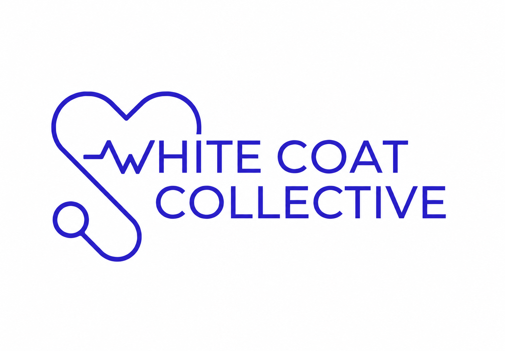
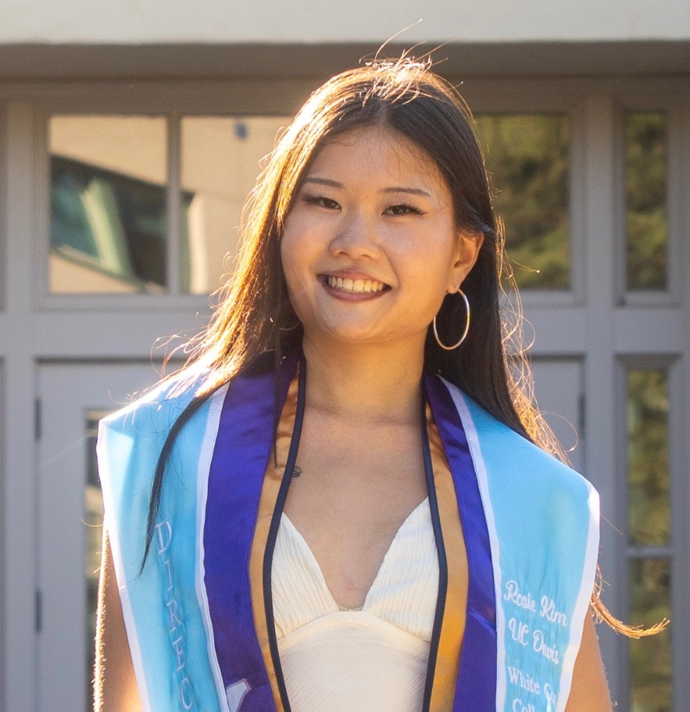
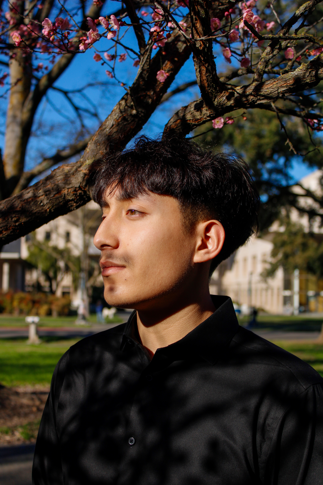

Precision in Purpose.
We are a dedicated community of pre-medical students committed to academic excellence, clinical exposure, and supporting one another on the rigorous journey to medical school.
Our Mission & Values
The White Coat Collective exists to bridge the gap between aspiration and achievement for future healthcare professionals. We believe that the path to medicine should not be walked alone.
Through comprehensive academic support, exclusive clinical shadowing opportunities, and a strong emphasis on community service, we empower our members to become compassionate, highly skilled physicians of tomorrow.

Executive Board
Meet the dedicated student leaders driving the vision, academic workshops, and clinical operations of the White Coat Collective.
Hussein Alpahlawan
Founder & CEO of the White Coat Collective. He is currently pursuing his Bachelor’s in Biochemistry and Molecular Biology at UC Davis. Alongside leading WCC, he has engaged in independent computational research and authored a narrative case study centered on patient advocacy. His pre-med interests include genomic medicine, muscle disease research, patient advocacy, and peer mentorship.

Sahej
As President, Sahej ensures the White Coat Collective runs like a well-oiled machine. From managing our digital resources to curating our Instagram presence, Sahej oversees our operational systems so that our members always have the information they need right at their fingertips.

Rosie
Director of Events for the White Coat Collective. She recently graduated with a bachelor's in Human Biology at UC Davis. To become a stronger pre-med applicant, she is currently taking post-bacc courses and working as a Medical Assistant. Her pre-med interests include teaching and mentoring, as well as working with pediatric and geriatric populations.

Alfonso
Director of Finance for the White Coat Collective and a Biochemistry and Molecular Biology student set to graduate in 2029. He is currently volunteering as a coach for a U8 boys soccer team. This year he plans to join a research lab and get his EMT certification. His pre-med interests include working with the pediatric population and promoting health and wellness. .
Kiley
Founder & Alumni Advisor for the White Coat Collective. She recently graduated from Johns Hopkins with her Masters in Bioethics and is working in healthcare during her growth year before applying to med school next cycle. She received her bachelors at UC Davis in biochemistry and molecular biology. Her pre-med interests are in: bioethics, public health, moral psychology, social media and mentoring.